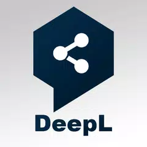
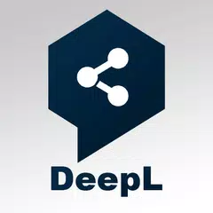
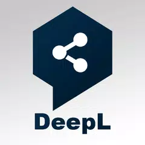

Hello there! My name is Reza Syahputra Koto, nickname Reza. I was born in Indonesia on the 17th of November, 2003. Im just a socially awkward human that likes reading mangas, playing video games, and highly interested in technology but somehow struggles at math. I'm currently studying at RMIT University (Student No. 3940230). I can speak Indonesian & English fluently.
I wrote this short introduction for my first assignment on the Introduction to Information Technology Course. I hope this can show you a little bit about me.
Ever since i was in grade school, I was always interested in technology, particularly phones & computers, I started tinkering with personal computers in middle school and watched a lot of technology related videos on YouTube. Eventually I started looking forward to events and product launch keynotes (e.g. CES/MWC/Computex) and watch their livestreams, I liked watching new mobile phone and processor launches in particular. I often build computers for myself or for my dad's small office. I also learned how to make some sites with WordPress CMS & host it on VPS services with linux.
At first I never thought I would have gotten into RMIT, I was recommended by my parents and agents to study here, I noticed RMIT puts a lot of emphasis on practical works, I do feel that this will help people gain real experiences for future careers.
I expected to learn web programming and IT systems administration during my study at RMIT, I'm interested in jobs in those fields in particular, I also expect to learn basic programming and network management.
This is currently ideal job, an entry-level IT hardware tech support. I expect the job to include giving technical hardware and software support to customers and employees, troubleshooting, creating basic guidelines and procedures, and resolve IT related problems or incidents in a timely manner. This position is appealing to me because I have interests in computer hardware, operating system, and softwares. I also want to learn more about the workflow and attitude required in this position. I would also like to experience working in a team, working with inexperienced customers, and learn how to handle high workloads that's expected in this position.
I'm currently studying for the Bachelor of IT degree at RMIT, I'm quite knowledgeable with computer hardware, and how to do the initial configurations of the systems, I'm also interested and currently learning about management softwares and Microsoft programs. I have a decent troubleshooting skills and can handle resolving problems remotely or on site with experienced or inexperienced customers and users.
To further enhance and to add to my skills and qualifications I plan to study at the university and self-study and research about IT support and services, along with in-depth study/research of the computer hardware, IT management softwares, Microsoft programs and the best way to deploy, maintain, and troubleshoot these systems. Currently I'm actively maintaining some office systems remotely in my home country. I may also apply for extra online courses on various websites like YouTube, etc.
Myers-Briggs test result: https://www.16personalities.com/istp-personality
Online Learning Style Test: https://archive.ph/V5OEx
Big Five Personality Test: https://openpsychometrics.org/tests/IPIP-BFFM/results.php?r=2,3.7,3.3,2.9,3.3#_I
A short summary of my myers-briggs test shows that my strengths include optimism, energetic, creative, practical, rational and spontaneous, knows how to prioritize something, relaxed, and great in a crisis. While weaknesses include stubbornness, insensitive, private and reserved, easily bored, dislikes long term commitments, and risky behaviour. My online learning tests show that I'm more of a visual learner,
I think this test gives me an insight of my general personality and overall learning style, while not 100% accurate, can provide me with some reference to better myself in the future, optimize my learning methods and resources, and helps me to adjust in tasks, relationships, and work environment.
In taking the results to account in forming a team, I might consider choosing teammates that will be suitable for me or complement my strengths and also teammates that supplement my weaknesses. Hopefully we can make a great team and do great in whatever projects we may be working on.
The project will be a software or several software creating a software suite for automating the task of localizing various forms of media (particularly comics, for this project idea). The software will likely require complex codes and the help of Artificial Intelligence (AI) algorithms to accurately recognize elements in the media. Using manga (a Japanese comic or graphic novel) as an example, common elements in the image includes individual panels, speech and box bubbles of varying opacity and shapes, speech text, sound effects text (SFX), etc.
The program will also need to manipulate the images accurately to remove the original text with varying languages and styles without ruining the art itself or automatically redraw the missing patches behind the original text. After the removal/cleaning process the program needs to automatically typeset the translated text with the appropriate fonts and language.
Advanced versions of the program/program suite may also automatically translate the original language to English or other languages with acceptable accuracy, thus reducing the translator's work to proofreading the translated output text.
Currently, there are so many non-english media that might have a good potential to be very successful or popular worldwide, one of the main challenges for these hidden gems to be discovered is obviously the dreaded language barrier. A particular media may be doing average or below average in it's home country, and may be popular somewhere else. But publishers obviously have limited human resource to license and localize it to English or other languages. Localizing manga requires a decent amount of work, from translating and proofreading the original text, cleaning the original text, bubbles and sound effects and redrawing the art behind those texts, and lettering the translated script to the comic itself, not to mention each chapter of a comic media varies from 5 to 50+ pages. Obviously only the comics that lucky or good enough to make a big break to be officially translated to English or other languages.
This project idea aims to simplify the process of localization significantly, therefore reducing the cost, labour, and time needed to localize a series. This will in turn allow a lot more titles to be enjoyed by people worldwide.
The project will be a software or part of a software suite, the goal is to automate the localization of non-english media, particularly Japanese, Chinese, and Korean comics. The process step will include translation of the original text, cleaning/redrawing of those texts and art behind the texts, lettering the translated and proofread text, and optional denoising of the image for best quality. The user would simply have to load the images to the software itself and the software will connect to the internet and start doing it's job. The software will be semi-cloud based and implements multiple authentication systems to ensure it's legal use by authorized entities. So far I have the determined some of the tools that maybe needed for this project. Some of the tools include: Python, Google's TensorFlow (to build CNNs) and ImageMagick for image recognition, image manipulation, and image denoising. As for the translation tool I'm thinking of utilizing DeepL's API as it's shown to be much better than what Google Translate offers. Other features that may be added include manual image editing (ImageMagick), manual denoising, colour correction, live lettering and proofreading tools, and cloud/online-only features.
The program could be monetized by selling is as a SaaS (Software-as-a-Service) subscription and sold to publishing corporations as an enterprise software, this could help long term developments and the online-only program could significantly hamper it's illegal use and piracy of the software itself.
I have identified some potential open source and closed source tools that may be used in this project. For example, Google's TensorFlow will the best candidate to build a Convolutional Neural Network (CNN) to detect the features in the comic image itself. ImageMagick is an open-source image manipulation tool that may be used for this project. Python could be used as the programming language, and DeepL API may be used for the translation task. Since this software would need a lot of online service, a cloud provider will be needed, such as Microsoft Azure or Amazon Web Services (AWS). Since we are working with Convolutional Neural Networks we need a fairly powerful hardware to proceed with the project, we can use a cloud service to provide the hardware needed for deep learning or procure a powerful workstation pPC depending on the needs and situation.

If this project becomes a success i'd imagine more non-english media may be much more accessible worldwide. And the software seems to be commercially viable, as it would increase speed and efficiency in localization of non-english comics, while also reducing the overall cost. Many non-english titles have been buried in history because it never gained enough traction or simply not lucky enough to be officially translated by publishers. With this tool we hope that more people can enjoy non-english comics and more potential authors and artists to come forward with their creative ideas.